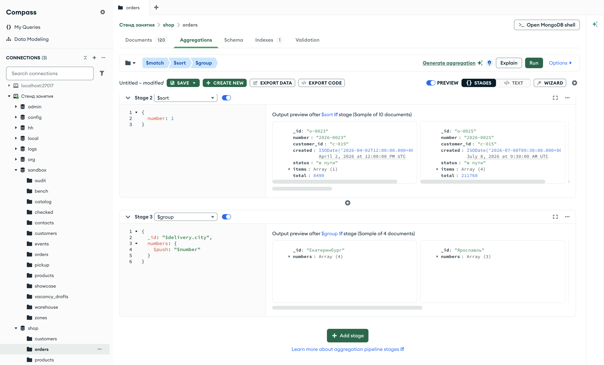

Справочник по MongoDB · модуль 4 · конвейер агрегации
4.7
$push, $addToSet,
$first и $last
В этой главе разобраны четыре аккумулятора стадии $group. $push собирает значения группы в массив, $addToSet — в массив без повторов. $first и $last берут значение из первого и последнего документа группы. Результат $first и $last зависит от порядка документов, поэтому отдельно разобрано, как этот порядок задаётся стадией $sort и что получается без неё.
- Категория
- Агрегация
- Уровень
- Начальный
- Связанные темы
- $group и аккумуляторы $sum, $avg, $min, $max (глава 4.4), $sort (глава 4.1), $unwind (глава 4.6), массивы (глава 2.6)
- Зачем это знать
- Собирать списки по группам — номера заказов города, категории покупок клиента — и находить первый, последний или самый дорогой документ в каждой группе
Как запускать примеры этой главы
mongodb-glava-4.7-python.zip, 62 КБmongodb-glava-4.7-ruby.zip, 61 КБmongodb-glava-4.7-go.zip, 67 КБmongodb-glava-4.7-cpp.zip, 66 КБ — все примеры главы готовыми программами, базы и стенд в Docker. В README.md — запуск в Docker, если Compass нет или он не подключается, и на установленном сервере с Compass, а также что должна напечатать каждая программа.lessons/ch4_7.py — пример вставляется в конец файлаlessons/ch4_7.rb — пример вставляется в конец файлаlessons/ch4_7.go — пример внутрь скобок в конце main, функции и типы — выше mainlessons/ch4_7.cpp — пример внутрь скобок в конце main, функции — выше maincd lessons, затем python ch4_7.pycd lessons, затем python3 ch4_7.py · в Docker: docker compose run --rm python lessons/ch4_7.pycd lessons, затем ruby ch4_7.rb · в Docker: docker compose run --rm ruby lessons/ch4_7.rbcd lessons, затем go run ch4_7.go · в Docker: docker compose run --rm go lessons/ch4_7.gocd lessons, затем g++ -std=c++17 ch4_7.cpp -o prog $(pkg-config --cflags --libs libmongocxx1) && ./prog · в Docker: docker compose run --rm cpp lessons/ch4_7.cpp§1Аккумулятор $push
Перед отправкой курьеров диспетчер раскладывает накладные заказов по конвертам: на каждом конверте — город, внутри — накладные всех заказов в этот город. Число накладных диспетчер может посчитать и так, но в конверте лежат сами накладные.
Аккумуляторы главы 4.4 сворачивают группу в одно число: сумму, среднее, минимум. Аккумулятор $push сворачивает группу в массив: он складывает значение выражения из каждого документа группы в массив, в порядке поступления документов. Запись — {"$push": "$number"}.
Пример раскладывает 13 заказов в пути по городам и собирает номера заказов каждого города. Перед группировкой заказы отсортированы по номеру, поэтому и в массивах номера идут по возрастанию.
pipeline = [
{"$match": {"status": "в пути"}},
{"$sort": {"number": 1}},
{"$group": {"_id": "$delivery.city", "numbers": {"$push": "$number"}}},
{"$sort": {"_id": 1}},
]
for doc in orders.aggregate(pipeline):
print(doc)
mongocxx::pipeline pipeline; pipeline.match(make_document(kvp("status", "в пути"))); pipeline.sort(make_document(kvp("number", 1))); pipeline.group(make_document( kvp("_id", "$delivery.city"), kvp("numbers", make_document(kvp("$push", "$number"))))); pipeline.sort(make_document(kvp("_id", 1))); for (auto&& doc : orders.aggregate(pipeline)) { std::cout << bsoncxx::to_json(doc, bsoncxx::ExtendedJsonMode::k_relaxed) << std::endl; }
pipeline := mongo.Pipeline{
{{Key: "$match", Value: bson.D{{Key: "status", Value: "в пути"}}}},
{{Key: "$sort", Value: bson.D{{Key: "number", Value: 1}}}},
{{Key: "$group", Value: bson.D{
{Key: "_id", Value: "$delivery.city"},
{Key: "numbers", Value: bson.D{{Key: "$push", Value: "$number"}}}}}},
{{Key: "$sort", Value: bson.D{{Key: "_id", Value: 1}}}},
}
cursor, _ := orders.Aggregate(ctx, pipeline)
for cursor.Next(ctx) {
var doc bson.D
cursor.Decode(&doc)
out, _ := bson.MarshalExtJSON(doc, false, false)
fmt.Println(string(out))
}
pipeline = [
{ "$match" => { "status" => "в пути" } },
{ "$sort" => { "number" => 1 } },
{ "$group" => { "_id" => "$delivery.city", "numbers" => { "$push" => "$number" } } },
{ "$sort" => { "_id" => 1 } },
]
orders.aggregate(pipeline).each { |doc| puts doc.inspect }
{'_id': 'Екатеринбург', 'numbers': ['2026-0025', '2026-0027', '2026-0028', '2026-0043']}
{'_id': 'Москва', 'numbers': ['2026-0023']}
{'_id': 'Новосибирск', 'numbers': ['2026-0055', '2026-0056', '2026-0085', '2026-0088', '2026-0119']}
{'_id': 'Ярославль', 'numbers': ['2026-0033', '2026-0054', '2026-0081']}
{ "_id" : "Екатеринбург", "numbers" : [ "2026-0025", "2026-0027", "2026-0028", "2026-0043" ] }
{ "_id" : "Москва", "numbers" : [ "2026-0023" ] }
{ "_id" : "Новосибирск", "numbers" : [ "2026-0055", "2026-0056", "2026-0085", "2026-0088", "2026-0119" ] }
{ "_id" : "Ярославль", "numbers" : [ "2026-0033", "2026-0054", "2026-0081" ] }
{"_id":"Екатеринбург","numbers":["2026-0025","2026-0027","2026-0028","2026-0043"]}
{"_id":"Москва","numbers":["2026-0023"]}
{"_id":"Новосибирск","numbers":["2026-0055","2026-0056","2026-0085","2026-0088","2026-0119"]}
{"_id":"Ярославль","numbers":["2026-0033","2026-0054","2026-0081"]}
{"_id"=>"Екатеринбург", "numbers"=>["2026-0025", "2026-0027", "2026-0028", "2026-0043"]}
{"_id"=>"Москва", "numbers"=>["2026-0023"]}
{"_id"=>"Новосибирск", "numbers"=>["2026-0055", "2026-0056", "2026-0085", "2026-0088", "2026-0119"]}
{"_id"=>"Ярославль", "numbers"=>["2026-0033", "2026-0054", "2026-0081"]}
Получилось четыре группы: в Санкт-Петербург заказов в пути нет. На схеме — сколько номеров попало в каждый массив.
| Город — _id | Массив numbers | Элементов |
|---|---|---|
| Екатеринбург | 2026-0025, 2026-0027, 2026-0028, 2026-0043 | 4 |
| Москва | 2026-0023 | 1 |
| Новосибирск | 2026-0055, 2026-0056, 2026-0085, 2026-0088, 2026-0119 | 5 |
| Ярославль | 2026-0033, 2026-0054, 2026-0081 | 3 |
| всего | 13 |
Каждый заказ попал ровно в один массив — массив своего города. Сумма длин массивов равна числу документов на входе $group.
Значение в $push — любое выражение. Если вместо пути к полю записать документ, в массив попадут документы. Пример собирает для заказов в пути в Ярославль номер и сумму каждого заказа.
pipeline = [
{"$match": {"status": "в пути", "delivery.city": "Ярославль"}},
{"$sort": {"number": 1}},
{"$group": {
"_id": "$delivery.city",
"orders": {"$push": {"number": "$number", "total": "$total"}},
}},
]
for doc in orders.aggregate(pipeline):
print(doc)
mongocxx::pipeline pipeline; pipeline.match(make_document(kvp("status", "в пути"), kvp("delivery.city", "Ярославль"))); pipeline.sort(make_document(kvp("number", 1))); pipeline.group(make_document( kvp("_id", "$delivery.city"), kvp("orders", make_document( kvp("$push", make_document(kvp("number", "$number"), kvp("total", "$total"))))))); for (auto&& doc : orders.aggregate(pipeline)) { std::cout << bsoncxx::to_json(doc, bsoncxx::ExtendedJsonMode::k_relaxed) << std::endl; }
pipeline := mongo.Pipeline{
{{Key: "$match", Value: bson.D{
{Key: "status", Value: "в пути"},
{Key: "delivery.city", Value: "Ярославль"}}}},
{{Key: "$sort", Value: bson.D{{Key: "number", Value: 1}}}},
{{Key: "$group", Value: bson.D{
{Key: "_id", Value: "$delivery.city"},
{Key: "orders", Value: bson.D{
{Key: "$push", Value: bson.D{
{Key: "number", Value: "$number"},
{Key: "total", Value: "$total"}}}}}}}},
}
cursor, _ := orders.Aggregate(ctx, pipeline)
for cursor.Next(ctx) {
var doc bson.D
cursor.Decode(&doc)
out, _ := bson.MarshalExtJSON(doc, false, false)
fmt.Println(string(out))
}
pipeline = [
{ "$match" => { "status" => "в пути", "delivery.city" => "Ярославль" } },
{ "$sort" => { "number" => 1 } },
{ "$group" => {
"_id" => "$delivery.city",
"orders" => { "$push" => { "number" => "$number", "total" => "$total" } },
} },
]
orders.aggregate(pipeline).each { |doc| puts doc.inspect }
{'_id': 'Ярославль', 'orders': [{'number': '2026-0033', 'total': 9180}, {'number': '2026-0054', 'total': 55360}, {'number': '2026-0081', 'total': 150470}]}
{ "_id" : "Ярославль", "orders" : [ { "number" : "2026-0033", "total" : 9180 }, { "number" : "2026-0054", "total" : 55360 }, { "number" : "2026-0081", "total" : 150470 } ] }
{"_id":"Ярославль","orders":[{"number":"2026-0033","total":9180},{"number":"2026-0054","total":55360},{"number":"2026-0081","total":150470}]}
{"_id"=>"Ярославль", "orders"=>[{"number"=>"2026-0033", "total"=>9180}, {"number"=>"2026-0054", "total"=>55360}, {"number"=>"2026-0081", "total"=>150470}]}
В массиве orders три документа, по одному на заказ, в каждом поля number и total. Так одним запросом получают и группы, и их состав.
$push кладёт в массив значение каждого документа, даже если такое значение уже есть. Когда повторы не нужны, используется другой аккумулятор.
§2Аккумулятор $addToSet
Список покупок за месяц содержит каждую покупку: «ноутбук, мышь, мышь, ноутбук». Список отделов магазина, в которых покупатель что-то брал, короче: «ноутбуки, периферия» — каждый отдел в нём один раз.
Аккумулятор $addToSet собирает значения группы в массив без повторов: значение добавляется, только если его в массиве ещё нет. Это множество значений группы. Порядок элементов в результате не задан.
Пример разворачивает позиции восьми заказов покупателя c-007 стадией $unwind (глава 4.6). Категории позиций он собирает двумя аккумуляторами: $push в поле all и $addToSet в поле unique.
Порядок элементов множества сервер не гарантирует: на стенде он менялся от запуска к запуску. Чтобы вывод был одинаковым, пример упорядочивает unique в стадии $project (глава 4.2) выражением $sortArray. Его параметр input — массив, sortBy: 1 — порядок по возрастанию.
pipeline = [
{"$match": {"customer_id": "c-007"}},
{"$unwind": "$items"},
{"$group": {
"_id": "$customer_id",
"all": {"$push": "$items.category"},
"unique": {"$addToSet": "$items.category"},
}},
{"$project": {"all": 1, "unique": {"$sortArray": {"input": "$unique", "sortBy": 1}}}},
]
for doc in orders.aggregate(pipeline):
print(doc)
mongocxx::pipeline pipeline; pipeline.match(make_document(kvp("customer_id", "c-007"))); pipeline.unwind("$items"); pipeline.group(make_document( kvp("_id", "$customer_id"), kvp("all", make_document(kvp("$push", "$items.category"))), kvp("unique", make_document(kvp("$addToSet", "$items.category"))))); pipeline.project(make_document( kvp("all", 1), kvp("unique", make_document( kvp("$sortArray", make_document(kvp("input", "$unique"), kvp("sortBy", 1))))))); for (auto&& doc : orders.aggregate(pipeline)) { std::cout << bsoncxx::to_json(doc, bsoncxx::ExtendedJsonMode::k_relaxed) << std::endl; }
pipeline := mongo.Pipeline{
{{Key: "$match", Value: bson.D{{Key: "customer_id", Value: "c-007"}}}},
{{Key: "$unwind", Value: "$items"}},
{{Key: "$group", Value: bson.D{
{Key: "_id", Value: "$customer_id"},
{Key: "all", Value: bson.D{{Key: "$push", Value: "$items.category"}}},
{Key: "unique", Value: bson.D{{Key: "$addToSet", Value: "$items.category"}}}}}},
{{Key: "$project", Value: bson.D{
{Key: "all", Value: 1},
{Key: "unique", Value: bson.D{
{Key: "$sortArray", Value: bson.D{
{Key: "input", Value: "$unique"},
{Key: "sortBy", Value: 1}}}}}}}},
}
cursor, _ := orders.Aggregate(ctx, pipeline)
for cursor.Next(ctx) {
var doc bson.D
cursor.Decode(&doc)
out, _ := bson.MarshalExtJSON(doc, false, false)
fmt.Println(string(out))
}
pipeline = [
{ "$match" => { "customer_id" => "c-007" } },
{ "$unwind" => "$items" },
{ "$group" => {
"_id" => "$customer_id",
"all" => { "$push" => "$items.category" },
"unique" => { "$addToSet" => "$items.category" },
} },
{ "$project" => {
"all" => 1,
"unique" => { "$sortArray" => { "input" => "$unique", "sortBy" => 1 } },
} },
]
orders.aggregate(pipeline).each { |doc| puts doc.inspect }
{'_id': 'c-007', 'all': ['ноутбуки', 'периферия', 'периферия', 'ноутбуки', 'периферия', 'периферия', 'ноутбуки', 'периферия', 'смартфоны', 'смартфоны', 'ноутбуки', 'аксессуары', 'комплектующие', 'периферия', 'периферия'], 'unique': ['аксессуары', 'комплектующие', 'ноутбуки', 'периферия', 'смартфоны']}
{ "_id" : "c-007", "all" : [ "ноутбуки", "периферия", "периферия", "ноутбуки", "периферия", "периферия", "ноутбуки", "периферия", "смартфоны", "смартфоны", "ноутбуки", "аксессуары", "комплектующие", "периферия", "периферия" ], "unique" : [ "аксессуары", "комплектующие", "ноутбуки", "периферия", "смартфоны" ] }
{"_id":"c-007","all":["ноутбуки","периферия","периферия","ноутбуки","периферия","периферия","ноутбуки","периферия","смартфоны","смартфоны","ноутбуки","аксессуары","комплектующие","периферия","периферия"],"unique":["аксессуары","комплектующие","ноутбуки","периферия","смартфоны"]}
{"_id"=>"c-007", "all"=>["ноутбуки", "периферия", "периферия", "ноутбуки", "периферия", "периферия", "ноутбуки", "периферия", "смартфоны", "смартфоны", "ноутбуки", "аксессуары", "комплектующие", "периферия", "периферия"], "unique"=>["аксессуары", "комплектующие", "ноутбуки", "периферия", "смартфоны"]}
В массиве all 15 элементов — по одному на каждую позицию. В массиве unique 5 — каждая категория один раз. На схеме — сколько раз каждая категория встречается в all.
| Категория | Раз в all ($push) | Раз в unique ($addToSet) |
|---|---|---|
| периферия | 7 | 1 |
| ноутбуки | 4 | 1 |
| смартфоны | 2 | 1 |
| аксессуары | 1 | 1 |
| комплектующие | 1 | 1 |
| длина массива | 15 | 5 |
Порядок в all — порядок позиций в заказах. Порядок в unique в выводе задан $sortArray; без него он может быть любым.
$push и $addToSet собирают все документы группы. Иногда из группы нужен один документ — первый или последний.
§3$first и $last
В журнале выдачи заказов записи идут по времени. Первая запись о покупателе — его первый заказ, последняя — самый свежий. Чтобы их найти, журнал читают по порядку и запоминают первую и последнюю подходящую запись.
Аккумулятор $first берёт значение выражения из первого документа группы, $last — из последнего. Первый и последний — в порядке, в котором документы пришли в стадию $group. Поэтому перед группировкой ставят $sort по полю, которое задаёт этот порядок.
Пример сортирует заказы трёх покупателей по дате создания created и для каждого покупателя находит число заказов, номер первого и номер последнего заказа.
pipeline = [
{"$match": {"customer_id": {"$in": ["c-007", "c-011", "c-018"]}}},
{"$sort": {"created": 1}},
{"$group": {
"_id": "$customer_id",
"orders": {"$sum": 1},
"first": {"$first": "$number"},
"last": {"$last": "$number"},
}},
{"$sort": {"_id": 1}},
]
for doc in orders.aggregate(pipeline):
print(doc)
mongocxx::pipeline pipeline; pipeline.match(make_document( kvp("customer_id", make_document(kvp("$in", make_array("c-007", "c-011", "c-018")))))); pipeline.sort(make_document(kvp("created", 1))); pipeline.group(make_document( kvp("_id", "$customer_id"), kvp("orders", make_document(kvp("$sum", 1))), kvp("first", make_document(kvp("$first", "$number"))), kvp("last", make_document(kvp("$last", "$number"))))); pipeline.sort(make_document(kvp("_id", 1))); for (auto&& doc : orders.aggregate(pipeline)) { std::cout << bsoncxx::to_json(doc, bsoncxx::ExtendedJsonMode::k_relaxed) << std::endl; }
pipeline := mongo.Pipeline{
{{Key: "$match", Value: bson.D{
{Key: "customer_id", Value: bson.D{{Key: "$in", Value: bson.A{"c-007", "c-011", "c-018"}}}}}}},
{{Key: "$sort", Value: bson.D{{Key: "created", Value: 1}}}},
{{Key: "$group", Value: bson.D{
{Key: "_id", Value: "$customer_id"},
{Key: "orders", Value: bson.D{{Key: "$sum", Value: 1}}},
{Key: "first", Value: bson.D{{Key: "$first", Value: "$number"}}},
{Key: "last", Value: bson.D{{Key: "$last", Value: "$number"}}}}}},
{{Key: "$sort", Value: bson.D{{Key: "_id", Value: 1}}}},
}
cursor, _ := orders.Aggregate(ctx, pipeline)
for cursor.Next(ctx) {
var doc bson.D
cursor.Decode(&doc)
out, _ := bson.MarshalExtJSON(doc, false, false)
fmt.Println(string(out))
}
pipeline = [
{ "$match" => { "customer_id" => { "$in" => ["c-007", "c-011", "c-018"] } } },
{ "$sort" => { "created" => 1 } },
{ "$group" => {
"_id" => "$customer_id",
"orders" => { "$sum" => 1 },
"first" => { "$first" => "$number" },
"last" => { "$last" => "$number" },
} },
{ "$sort" => { "_id" => 1 } },
]
orders.aggregate(pipeline).each { |doc| puts doc.inspect }
{'_id': 'c-007', 'orders': 8, 'first': '2026-0036', 'last': '2026-0064'}
{'_id': 'c-011', 'orders': 9, 'first': '2026-0062', 'last': '2026-0051'}
{'_id': 'c-018', 'orders': 9, 'first': '2026-0116', 'last': '2026-0033'}
{ "_id" : "c-007", "orders" : 8, "first" : "2026-0036", "last" : "2026-0064" }
{ "_id" : "c-011", "orders" : 9, "first" : "2026-0062", "last" : "2026-0051" }
{ "_id" : "c-018", "orders" : 9, "first" : "2026-0116", "last" : "2026-0033" }
{"_id":"c-007","orders":8,"first":"2026-0036","last":"2026-0064"}
{"_id":"c-011","orders":9,"first":"2026-0062","last":"2026-0051"}
{"_id":"c-018","orders":9,"first":"2026-0116","last":"2026-0033"}
{"_id"=>"c-007", "orders"=>8, "first"=>"2026-0036", "last"=>"2026-0064"}
{"_id"=>"c-011", "orders"=>9, "first"=>"2026-0062", "last"=>"2026-0051"}
{"_id"=>"c-018", "orders"=>9, "first"=>"2026-0116", "last"=>"2026-0033"}
У покупателя c-007 восемь заказов, первый — 2026-0036, последний — 2026-0064. На схеме — все восемь заказов c-007 в порядке, в котором они пришли в $group.
- 12026-003610.03$first
- 22026-011719.03
- 32026-008523.03
- 42026-005628.03
- 52026-000215.04
- 62026-000322.04
- 72026-009504.05
- 82026-006417.06$last
Верхнее число — место документа в потоке, под номером заказа — дата создания в 2026 году. $first взял номер из первого документа, $last — из восьмого.
Номера заказов не совпадают с порядком дат: заказ 2026-0002 создан позже заказа 2026-0036. Поэтому результат $first и $last зависит от того, по какому полю отсортирован поток и отсортирован ли он.
§4Порядок документов перед $group
Если журнал выдачи перед чтением рассыпать и собрать в случайном порядке, «первая запись о покупателе» окажется любой его записью. С $first и $last так же: без $sort документы приходят в стадию в порядке хранения, а этот порядок сервер не гарантирует.
Пример выполняет тот же конвейер без стадии $sort.
pipeline = [
{"$match": {"customer_id": {"$in": ["c-007", "c-011", "c-018"]}}},
{"$group": {
"_id": "$customer_id",
"first": {"$first": "$number"},
"last": {"$last": "$number"},
}},
{"$sort": {"_id": 1}},
]
for doc in orders.aggregate(pipeline):
print(doc)
mongocxx::pipeline pipeline; pipeline.match(make_document( kvp("customer_id", make_document(kvp("$in", make_array("c-007", "c-011", "c-018")))))); pipeline.group(make_document( kvp("_id", "$customer_id"), kvp("first", make_document(kvp("$first", "$number"))), kvp("last", make_document(kvp("$last", "$number"))))); pipeline.sort(make_document(kvp("_id", 1))); for (auto&& doc : orders.aggregate(pipeline)) { std::cout << bsoncxx::to_json(doc, bsoncxx::ExtendedJsonMode::k_relaxed) << std::endl; }
pipeline := mongo.Pipeline{
{{Key: "$match", Value: bson.D{
{Key: "customer_id", Value: bson.D{{Key: "$in", Value: bson.A{"c-007", "c-011", "c-018"}}}}}}},
{{Key: "$group", Value: bson.D{
{Key: "_id", Value: "$customer_id"},
{Key: "first", Value: bson.D{{Key: "$first", Value: "$number"}}},
{Key: "last", Value: bson.D{{Key: "$last", Value: "$number"}}}}}},
{{Key: "$sort", Value: bson.D{{Key: "_id", Value: 1}}}},
}
cursor, _ := orders.Aggregate(ctx, pipeline)
for cursor.Next(ctx) {
var doc bson.D
cursor.Decode(&doc)
out, _ := bson.MarshalExtJSON(doc, false, false)
fmt.Println(string(out))
}
pipeline = [
{ "$match" => { "customer_id" => { "$in" => ["c-007", "c-011", "c-018"] } } },
{ "$group" => {
"_id" => "$customer_id",
"first" => { "$first" => "$number" },
"last" => { "$last" => "$number" },
} },
{ "$sort" => { "_id" => 1 } },
]
orders.aggregate(pipeline).each { |doc| puts doc.inspect }
{'_id': 'c-007', 'first': '2026-0002', 'last': '2026-0117'}
{'_id': 'c-011', 'first': '2026-0006', 'last': '2026-0112'}
{'_id': 'c-018', 'first': '2026-0001', 'last': '2026-0116'}
{ "_id" : "c-007", "first" : "2026-0002", "last" : "2026-0117" }
{ "_id" : "c-011", "first" : "2026-0006", "last" : "2026-0112" }
{ "_id" : "c-018", "first" : "2026-0001", "last" : "2026-0116" }
{"_id":"c-007","first":"2026-0002","last":"2026-0117"}
{"_id":"c-011","first":"2026-0006","last":"2026-0112"}
{"_id":"c-018","first":"2026-0001","last":"2026-0116"}
{"_id"=>"c-007", "first"=>"2026-0002", "last"=>"2026-0117"}
{"_id"=>"c-011", "first"=>"2026-0006", "last"=>"2026-0112"}
{"_id"=>"c-018", "first"=>"2026-0001", "last"=>"2026-0116"}
Для всех трёх покупателей ответ другой. На стенде документы хранятся в порядке _id, поэтому $first вернул заказ с наименьшим номером, а $last — с наибольшим. После вставки, удаления или перестройки коллекции порядок хранения может измениться, и ответ изменится вместе с ним.
| Покупатель | $first с $sort | $first без $sort | $last с $sort | $last без $sort |
|---|---|---|---|---|
| c-007 | 2026-0036 | 2026-0002 | 2026-0064 | 2026-0117 |
| c-011 | 2026-0062 | 2026-0006 | 2026-0051 | 2026-0112 |
| c-018 | 2026-0116 | 2026-0001 | 2026-0033 | 2026-0116 |
Зелёным — ответ на вопрос «первый и последний заказ по дате». Красным — результат без сортировки. У c-018 заказ 2026-0116 без сортировки оказался последним, хотя по дате он первый.
Сортировка перед $first позволяет не только найти первый по времени документ, но и выбрать лучший документ группы по любому полю.
§5Лучший документ в каждой группе
Чтобы найти самого высокого ученика в каждом классе, всех учеников школы выстраивают по росту. Затем из каждого класса берут того, кто стоит в строю первым. Так одной сортировкой решается задача для всех классов сразу.
Пример находит самый дорогой заказ каждого города: $sort по сумме по убыванию, затем $group по городу с $first для номера и суммы. В той же группе $sum считает заказы города.
pipeline = [
{"$sort": {"total": -1}},
{"$group": {
"_id": "$delivery.city",
"number": {"$first": "$number"},
"total": {"$first": "$total"},
"orders": {"$sum": 1},
}},
{"$sort": {"total": -1}},
]
for doc in orders.aggregate(pipeline):
print(doc)
mongocxx::pipeline pipeline; pipeline.sort(make_document(kvp("total", -1))); pipeline.group(make_document( kvp("_id", "$delivery.city"), kvp("number", make_document(kvp("$first", "$number"))), kvp("total", make_document(kvp("$first", "$total"))), kvp("orders", make_document(kvp("$sum", 1))))); pipeline.sort(make_document(kvp("total", -1))); for (auto&& doc : orders.aggregate(pipeline)) { std::cout << bsoncxx::to_json(doc, bsoncxx::ExtendedJsonMode::k_relaxed) << std::endl; }
pipeline := mongo.Pipeline{
{{Key: "$sort", Value: bson.D{{Key: "total", Value: -1}}}},
{{Key: "$group", Value: bson.D{
{Key: "_id", Value: "$delivery.city"},
{Key: "number", Value: bson.D{{Key: "$first", Value: "$number"}}},
{Key: "total", Value: bson.D{{Key: "$first", Value: "$total"}}},
{Key: "orders", Value: bson.D{{Key: "$sum", Value: 1}}}}}},
{{Key: "$sort", Value: bson.D{{Key: "total", Value: -1}}}},
}
cursor, _ := orders.Aggregate(ctx, pipeline)
for cursor.Next(ctx) {
var doc bson.D
cursor.Decode(&doc)
out, _ := bson.MarshalExtJSON(doc, false, false)
fmt.Println(string(out))
}
pipeline = [
{ "$sort" => { "total" => -1 } },
{ "$group" => {
"_id" => "$delivery.city",
"number" => { "$first" => "$number" },
"total" => { "$first" => "$total" },
"orders" => { "$sum" => 1 },
} },
{ "$sort" => { "total" => -1 } },
]
orders.aggregate(pipeline).each { |doc| puts doc.inspect }
{'_id': 'Екатеринбург', 'number': '2026-0120', 'total': 457930, 'orders': 28}
{'_id': 'Москва', 'number': '2026-0063', 'total': 413410, 'orders': 18}
{'_id': 'Ярославль', 'number': '2026-0115', 'total': 392660, 'orders': 21}
{'_id': 'Новосибирск', 'number': '2026-0091', 'total': 354960, 'orders': 35}
{'_id': 'Санкт-Петербург', 'number': '2026-0009', 'total': 320740, 'orders': 18}
{ "_id" : "Екатеринбург", "number" : "2026-0120", "total" : 457930, "orders" : 28 }
{ "_id" : "Москва", "number" : "2026-0063", "total" : 413410, "orders" : 18 }
{ "_id" : "Ярославль", "number" : "2026-0115", "total" : 392660, "orders" : 21 }
{ "_id" : "Новосибирск", "number" : "2026-0091", "total" : 354960, "orders" : 35 }
{ "_id" : "Санкт-Петербург", "number" : "2026-0009", "total" : 320740, "orders" : 18 }
{"_id":"Екатеринбург","number":"2026-0120","total":457930,"orders":28}
{"_id":"Москва","number":"2026-0063","total":413410,"orders":18}
{"_id":"Ярославль","number":"2026-0115","total":392660,"orders":21}
{"_id":"Новосибирск","number":"2026-0091","total":354960,"orders":35}
{"_id":"Санкт-Петербург","number":"2026-0009","total":320740,"orders":18}
{"_id"=>"Екатеринбург", "number"=>"2026-0120", "total"=>457930, "orders"=>28}
{"_id"=>"Москва", "number"=>"2026-0063", "total"=>413410, "orders"=>18}
{"_id"=>"Ярославль", "number"=>"2026-0115", "total"=>392660, "orders"=>21}
{"_id"=>"Новосибирск", "number"=>"2026-0091", "total"=>354960, "orders"=>35}
{"_id"=>"Санкт-Петербург", "number"=>"2026-0009", "total"=>320740, "orders"=>18}
Самый дорогой заказ — в Екатеринбурге: 2026-0120 на 457 930. Поля number и total взяты из одного документа: оба аккумулятора $first смотрят на первый документ группы. На схеме — сколько документов выходит из каждой стадии.
Если заменить $first на $max из главы 4.4, сумма будет та же. Номер заказа так не получить: $max по полю number вернёт наибольший номер среди всех заказов города. Аккумуляторы главы собираются и в Compass.
§6Аккумуляторы в Compass
Аккумуляторы записываются в стадии $group на вкладке Aggregations так же, как в коде. На кадре — конвейер из §1: заказы в пути, сортировка по номеру и $group с $push.

$group с $push номеров заказовПод стадией $sort подпись Sample of 10 documents: заказов в пути 13, а Compass показывает в выборке не больше 10 документов. Под $group — Sample of 4 documents, по документу на город. У каждой группы поле numbers со значением Array (N): у Екатеринбурга Array (4), у Ярославля Array (3). Стрелка слева раскрывает массив, остальные группы открываются прокруткой вправо.
Группы на кадре идут в другом порядке, чем в выводе примера. В конвейере на кадре нет $sort после $group, а порядок групп без сортировки не задан (глава 4.4).
§7Частые ошибки
| Что написано | Что происходит | Как правильно |
|---|---|---|
{"numbers": {"$push": "$number", "$addToSet": "$number"}} | Ошибка 40238: у поля группы может быть только один аккумулятор | Каждому аккумулятору — своё поле: "all": {"$push": …}, "unique": {"$addToSet": …} |
$first и $last без $sort перед $group | Берётся первый и последний документ в порядке поступления в стадию; без сортировки этот порядок не задан | Перед $group поставить $sort по полю, которое задаёт «первый»: {"$sort": {"created": 1}} |
Ожидание, что $addToSet вернёт значения по алфавиту | Порядок элементов в результате $addToSet не задан | Не полагаться на порядок; если он нужен, собирать $push после $sort по этому полю |
$push по всем документам большой коллекции в одну группу | Массив растёт вместе с коллекцией; документ результата не может быть больше 16 МБ | Собирать в массив только отобранные $match документы или отдельные поля |
| Что написано | Что происходит | Как правильно |
|---|---|---|
{"numbers": {"$push": "$number", "$addToSet": "$number"}} | Ошибка 40238: у поля группы может быть только один аккумулятор | Каждому аккумулятору — своё поле: "all": {"$push": …}, "unique": {"$addToSet": …} |
$first и $last без $sort перед $group | Берётся первый и последний документ в порядке поступления в стадию; без сортировки этот порядок не задан | Перед $group поставить $sort по полю, которое задаёт «первый»: {"$sort": {"created": 1}} |
Ожидание, что $addToSet вернёт значения по алфавиту | Порядок элементов в результате $addToSet не задан | Не полагаться на порядок; если он нужен, собирать $push после $sort по этому полю |
$push по всем документам большой коллекции в одну группу | Массив растёт вместе с коллекцией; документ результата не может быть больше 16 МБ | Собирать в массив только отобранные $match документы или отдельные поля |
| Что написано | Что происходит | Как правильно |
|---|---|---|
{"numbers": {"$push": "$number", "$addToSet": "$number"}} | Ошибка 40238: у поля группы может быть только один аккумулятор | Каждому аккумулятору — своё поле: "all": {"$push": …}, "unique": {"$addToSet": …} |
$first и $last без $sort перед $group | Берётся первый и последний документ в порядке поступления в стадию; без сортировки этот порядок не задан | Перед $group поставить $sort по полю, которое задаёт «первый»: {"$sort": {"created": 1}} |
Ожидание, что $addToSet вернёт значения по алфавиту | Порядок элементов в результате $addToSet не задан | Не полагаться на порядок; если он нужен, собирать $push после $sort по этому полю |
$push по всем документам большой коллекции в одну группу | Массив растёт вместе с коллекцией; документ результата не может быть больше 16 МБ | Собирать в массив только отобранные $match документы или отдельные поля |
| Что написано | Что происходит | Как правильно |
|---|---|---|
{"numbers": {"$push": "$number", "$addToSet": "$number"}} | Ошибка 40238: у поля группы может быть только один аккумулятор | Каждому аккумулятору — своё поле: "all": {"$push": …}, "unique": {"$addToSet": …} |
$first и $last без $sort перед $group | Берётся первый и последний документ в порядке поступления в стадию; без сортировки этот порядок не задан | Перед $group поставить $sort по полю, которое задаёт «первый»: {"$sort": {"created": 1}} |
Ожидание, что $addToSet вернёт значения по алфавиту | Порядок элементов в результате $addToSet не задан | Не полагаться на порядок; если он нужен, собирать $push после $sort по этому полю |
$push по всем документам большой коллекции в одну группу | Массив растёт вместе с коллекцией; документ результата не может быть больше 16 МБ | Собирать в массив только отобранные $match документы или отдельные поля |
§8Проверьте себя
Чем результат $push отличается от результата $addToSet на одних и тех же документах?
$push кладёт в массив значение каждого документа, с повторами. $addToSet кладёт каждое значение один раз. У покупателя c-007 это 15 и 5 элементов.
Почему без $sort $first вернул для c-007 заказ 2026-0002?
Документы пришли в $group в порядке хранения, по _id, и первым оказался заказ с наименьшим номером. По дате первый заказ — 2026-0036.
Как одним конвейером найти самый дешёвый заказ каждого города?
{"$sort": {"total": 1}}, затем $group по "$delivery.city" с {"$first": "$number"} и {"$first": "$total"}.
Почему поле {"$push": "$number", "$addToSet": "$number"} даёт ошибку?
У поля группы может быть только один аккумулятор, ошибка 40238. Для двух аккумуляторов нужны два поля.
Можно ли рассчитывать, что $addToSet вернёт значения в порядке первого появления?
Нет. Порядок элементов множества не задан. Если порядок нужен, значения собирают $push после $sort.
§9Самостоятельная работа
Работа выполняется на языке, выбранном в шапке главы, в заготовке lessons/ch4_7 с функцией show. Данные — shop.orders, глава их не меняет. Во всех заданиях, где нужна сортировка, вторым ключом добавляется number: так порядок однозначен и при совпадении первого ключа.
- Отменённые заказыПо каждому городу собрать номера отменённых заказов по возрастанию номера.
- Способы оплатыПо каждому городу собрать способы оплаты (
payment.method) без повторов. - Последний заказПо каждому городу найти номер последнего по дате
createdзаказа. - Самый дешёвыйПо каждому городу найти номер и сумму самого дешёвого доставленного заказа.
Ответ для самопроверки
Отменённые: Екатеринбург — 2026-0015, 0038, 0051, 0066; Москва — 0061, 0063, 0065, 0106; Новосибирск — 0005, 0021, 0047, 0114, 0117; Санкт-Петербург — 0050, 0053, 0069, 0070, 0098, 0109; Ярославль — 0041. Всего 20.
Способы оплаты: в каждом городе три — карта, картой при получении, СБП; порядок в массивах разный.
Последний заказ: Екатеринбург — 2026-0051, Москва — 2026-0110, Новосибирск — 2026-0088, Санкт-Петербург — 2026-0039, Ярославль — 2026-0054.
Самый дешёвый доставленный: Екатеринбург — 2026-0006 (2370), Москва — 2026-0046 (13 560), Новосибирск — 2026-0068 (2370), Санкт-Петербург — 2026-0078 (16 980), Ярославль — 2026-0001 (5980).
§10Шпаргалка
{"numbers": {"$push": "$number"}}
{"categories": {"$addToSet": "$items.category"}}
{"$project": {"categories": {"$sortArray": {"input": "$categories", "sortBy": 1}}}}
{"first": {"$first": "$number"}, "last": {"$last": "$number"}}
{"$sort": {"total": -1}}
{"$group": {"_id": "$delivery.city", "top": {"$first": "$number"}}}
make_document(kvp("numbers", make_document(kvp("$push", "$number"))))
make_document(kvp("categories", make_document(kvp("$addToSet", "$items.category"))))
pipeline.project(make_document(kvp("categories", make_document(kvp("$sortArray", make_document(kvp("input", "$categories"), kvp("sortBy", 1)))))));
make_document(kvp("first", make_document(kvp("$first", "$number"))), kvp("last", make_document(kvp("$last", "$number"))))
pipeline.sort(make_document(kvp("total", -1)));
pipeline.group(make_document(kvp("_id", "$delivery.city"), kvp("top", make_document(kvp("$first", "$number")))));
bson.D{{Key: "numbers", Value: bson.D{{Key: "$push", Value: "$number"}}}}
bson.D{{Key: "categories", Value: bson.D{{Key: "$addToSet", Value: "$items.category"}}}}
bson.D{{Key: "$project", Value: bson.D{{Key: "categories", Value: bson.D{{Key: "$sortArray", Value: bson.D{{Key: "input", Value: "$categories"}, {Key: "sortBy", Value: 1}}}}}}}}
bson.D{{Key: "first", Value: bson.D{{Key: "$first", Value: "$number"}}}, {Key: "last", Value: bson.D{{Key: "$last", Value: "$number"}}}}
bson.D{{Key: "$sort", Value: bson.D{{Key: "total", Value: -1}}}}
bson.D{{Key: "$group", Value: bson.D{{Key: "_id", Value: "$delivery.city"}, {Key: "top", Value: bson.D{{Key: "$first", Value: "$number"}}}}}}
{ "numbers" => { "$push" => "$number" } }
{ "categories" => { "$addToSet" => "$items.category" } }
{ "$project" => { "categories" => { "$sortArray" => { "input" => "$categories", "sortBy" => 1 } } } }
{ "first" => { "$first" => "$number" }, "last" => { "$last" => "$number" } }
{ "$sort" => { "total" => -1 } }
{ "$group" => { "_id" => "$delivery.city", "top" => { "$first" => "$number" } } }
Итог главы
$push собирает значения группы в массив в порядке поступления документов, с повторами; значением может быть и документ. $addToSet собирает значения без повторов, порядок элементов не задан.
$first и $last берут значение из первого и последнего документа группы. Какой документ первый, определяет $sort перед $group. Без него ответ зависит от порядка хранения и может измениться.
Сортировка по полю и $first вместе находят лучший документ каждой группы: самый дорогой заказ города, последний заказ покупателя.